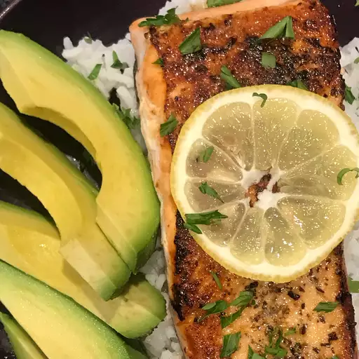

Easy 5-steps Salmon

Description
This is recipies for fast, easy to make and delicious salmon.
Ingredients
- 1 tablespoon gralic powder
- 1 tablespoon dried basil
- 1/2 teaspoon salt
- 4 (6 ounce) fillets salmon
- 2 tablespoon butter
- 4 lemon wedges
Steps
- Stir garlic powder, basil and salt together in small bolw. Rub the mixture over the salmon.
- Melt the butter in large skilllet over medium heat. Add salmon and cook until browned and flaky, about 5 minutes per side.
- Sarve salmon with lemon wedges.
Back to home page